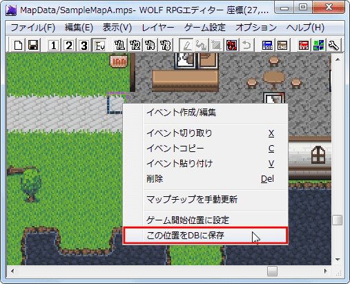
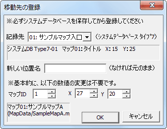
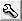
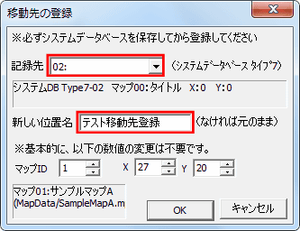
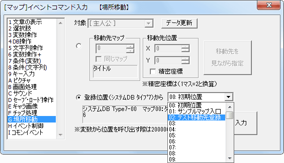

【A.移動先の登録機能】
WOLF RPGエディターではスタート位置だけでなく、場所移動先も保存しておくことが可能です。これは「2.スタート位置の設定」のときの手順とよく似ています。
イベントレイヤー選択時に、保存したい座標で右クリックしてください。以下のメニューが表示されます。

ここではメニューのうち、「この位置をDBに保存」を選択します。すると以下のようなウィンドウが表示されます。
|  | 【記録先】 データベース、タイプ7番のどこに座標を記録するかを選択します。この記録先の内容は下の欄に表示されます（「システムDB Type7-01 マップ01：Test ～」と書いてある部分です） 【新しい位置名】 記録時に付ける位置の名前です、ゲーム的には意味はありません、あなたがエディットする際に区別するための名前ですので、自由に設定してください。 【マップID・X・Y】 この辺りは特にいじる必要はありません。 ※マップがシステムデータベースに登録されていない場合はマップIDが自動で設定されていないので、一度「マップの設定」でシステムデータベースに登録してから移動先を登録することを推奨します。 |
↓入力例
|  | 記録先を、まだ何も入力されていない「02番」に変更し、新しい位置名として「テスト移動先登録」と入力しました、それ以外は何も変更しません。そのまま「OK」を押します。 これで移動先の登録は完了です。 |
以上の手順を行うと、イベントコマンドの「場所移動」にて、記録した場所を移動先として使用することができます。

先ほど登録した「02: テスト移動先登録」が移動先として選択できるようになっています。登録したのに表示されていないという場合は、上の方にある「データ更新」ボタンを押してください。
マップに関する説明は以上です。